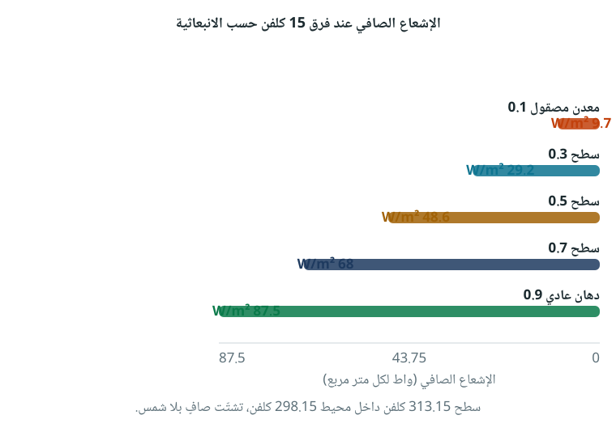

الإشعاع لا يتوقف عند الحرارة المتساوية: الشبكة الصافية
Net radiation still flows at equal air temperature
سطح بحرارة 40 مئوية يشعّ نحو جدران بحرارة 25 مئوية حتى لو كان الهواء نفسه. الصافي يعتمد على الفرق بين الأسّين الرابعين وعلى الانبعاثية: 88 واط لكل متر مربع عند انبعاثية 0.9، و9.8 فقط عند 0.1.
كل جسم يشعّ طاقة بحسب حرارته المطلقة، ويستقبل في الوقت نفسه إشعاع ما حوله. عندما يتساوى الهواء والجسم لا يتوقف التبادل: يبقى صافٍ بمقدار الفرق بين الأسّين الرابعين. هذا هو الفرق بين حرارة الهواء وحرارة الإحساس، وسبب أن جدارًا باردًا يُشعرك بالبرد قبل أن تتغيّر حرارة الغرفة.
الآلية
كيف يحدث الأمر على مستوى الجسيمات أو المتغيّرات المباشرة
الانبعاثية تصف كفاءة السطح في الإشعاع مقارنة بجسم أسود مثالي. السطوح المعدنية المصقولة تنبعث قليلًا وتمتص قليلًا، والسطوح العضوية والدهانات غير اللامعة تنبعث بكفاءة عالية. التبادل الصافي هو الفرق بين ما يشعّه السطح وما يصله من محيطه، بمعامل يعتمد على الهندسة في الحالات غير المتوازية.
الأرقام والوحدات
العلاقات والوحدات والنطاقات العددية التي تسند الشرح
q″ = ε·σ·(T⁴ − T_mحيط⁴). عند 313.15 و298.15 كلفن يكون فرق الأسّين الرابعين نحو 1.72 مليار، أي 97.5 واط/م² لجسم أسود. بضربها في انبعاثية 0.9 تصير 87.8، وفي 0.5 تصير 48.8، وفي 0.1 تصير 9.8. الفرق بين سطح مطلي وسطح مصقول في الغرفة نفسها يبلغ تسعة أضعاف.
الفرق الدقيق
المفهوم الملتبس الذي يُخلَط به، وأين ينفصلان
هذا ليس الحمل الحراري: الحمل ينقل الحرارة عبر الهواء ويحتاج فرق حرارة بين السطح والهواء، والإشعاع لا يحتاج وسيطًا ولا يحتاج فرقًا في حرارة الهواء أصلًا. الخلط بينهما هو أصل كثير من الأحكام الخاطئة عن العزل.
حدود التعريف
أين ينكسر التعريف أو النموذج وما الذي لا يفسّره
المعادلة تفترض سطحًا صغيرًا داخل محيط كبير، وسطحًا رماديًا بانبعاثية ثابتة لا تتغيّر مع الطول الموجي. الأسطح الانتقائية للإشعاع (الزجاج، الأغشية المنخفضة الانبعاثية) تحتاج تكاملًا طيفيًا لا معادلة واحدة، والنتيجة هنا تقدير لا تصميم.

| الكمية | القيمة | المصدر |
|---|---|---|
| الإشعاع الصافي عند انبعاثية 0.9 | 87.5 W/m² | [1] |
| الإشعاع الصافي عند انبعاثية 0.1 | 9.7 W/m² | [1] |
| ثابت ستيفان-بولتزمان | 5.67e-8 W/(m²·K⁴) | [2] |
| فرق الحرارة بين السطح والمحيط | 15 K | [1] |
المصادر
- 1 OpenStax, College Physics 2e — Radiation — OpenStax. openstax.org/books/college-physics-2e/pages/14-7-radiation · اطُّلع عليه 2026-11-16
- 2 NIST — SI Units and Metrication — NIST. www.nist.gov/pml/owm · اطُّلع عليه 2026-11-16
- 3 OpenStax, College Physics 2e — Heat Transfer Methods — OpenStax. openstax.org/books/college-physics-2e/pages/14-4-heat-transfer-methods · اطُّلع عليه 2026-11-16
راجعه: مراجعة آلية — ديوان المعرفة (أرقام محسوبة + مصادر متحققة) 2026-11-16 · 2026-11-16 · آخر تحديث 2026-11-16